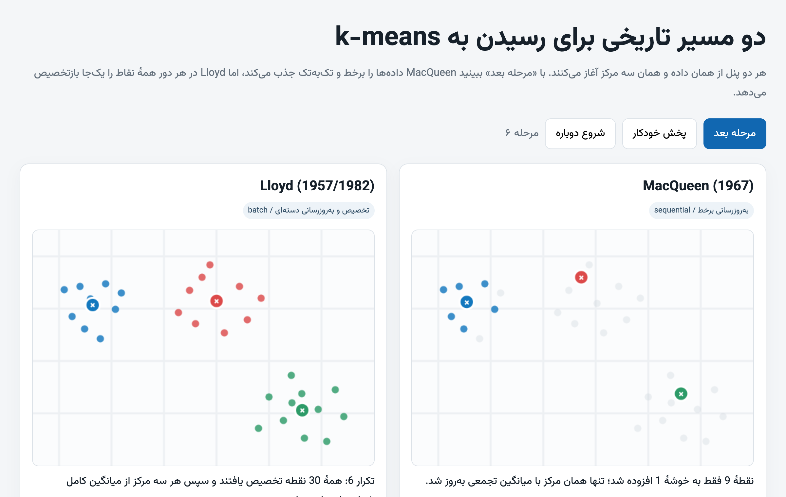
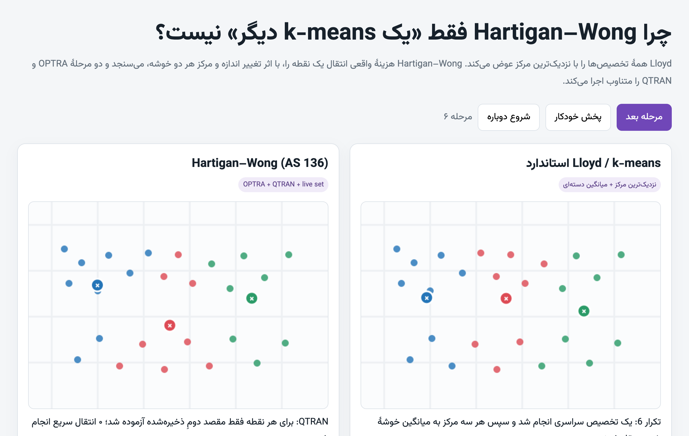

k-means, step by step
Two pages from a bachelor project on k-means and GLKM. Each runs two classic algorithms side by side on the same data, one step at a time. The pages are in Persian.

MacQueen (1967) against Lloyd (1957) One point and one mean at a time, against every point and every mean at once.
Hartigan–Wong (1979) against Lloyd Single-point moves judged by the change in cost, against Lloyd's batch rounds.